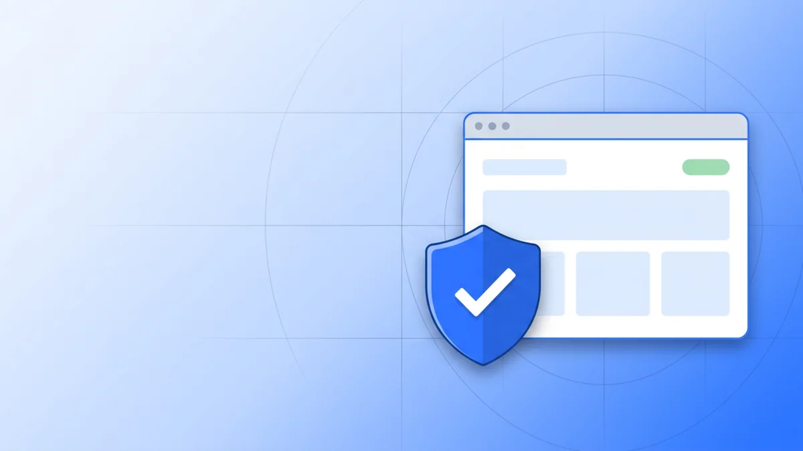

You paste, we stay local
The link or password is processed by JavaScript already loaded in this page. There is no API call, no account, and no log.
Paste a link to see why it looks suspicious, test how long a password would survive an attack, and find out what your browser quietly reveals. Everything runs on your device.

Each tool explains its verdict line by line, so you can judge the result instead of trusting a coloured badge.
Paste a URL or an email's links and see the exact signals: lookalike domains, IP addresses, odd encoding, risky paths.
Check a linkSee the real guess count behind a password, which patterns weaken it, and how long an offline attack would take.
Test a passwordCreate random passwords or memorable passphrases with a real entropy figure, generated by your device's cryptography.
Generate oneScreen size, timezone, fonts, graphics card and more. See the identifying signals every site can read, and how to reduce them.
Run the checkThe link or password is processed by JavaScript already loaded in this page. There is no API call, no account, and no log.
The same analysis code that ships inside the BrowserGuard extension scores the input against published phishing patterns.
Each result lists what was found, what it does and does not prove, and what to do next — including when a result is inconclusive.
Most security tools ask for an email address and upload what you paste. These do the opposite: the code is delivered once, then everything happens on your machine.
The tools here are deliberate: you paste, you check. The BrowserGuard extension applies the same analysis to every page you open, and blocks ad and tracker requests on the way.
No account, no upload, no waiting. You will get the reason behind the verdict in a second.